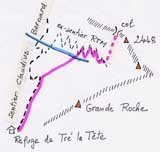
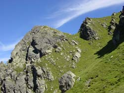

le Triangle (2364 m)

Départ : refuge de Tré la Tête (1970 m)
Aller : 2,5 km, +520 et - 90 m, 97 min
Retour : 2,5 km, + 90 et - 520 m, 67 min
Difficulté : EE+
Période : août - septembre
Remarque : réservé aux bons montagnards (sente peu visible au départ, ensuite il faut souvent "flairer le bon passage", enfin sente sur pente raide en partie finale).
Bibliographie : revue 2000 du CAF Annecy.

Partir par l’itinéraire AsF© 16.2 (lire page 103) : prendre une sente en voie de disparition dans la boucle à G du sentier Claudius Bernard (1880 m). Elle gagne une épaule vers 1920 (monter à D de la végétation), traverse une pente (croise le ravin à 2060 m) pour gagner l’ancien sentier ayant servi à construire des paravalanches en haut de la combe. Remonter 7 lacets, parfois éboulés : ces ouvrages ont quasiment disparu. Vers 2250 m, ne pas traverser le ravin et partir à G vers le col du Triangle (2320 m) puis le sommet (trace sur pente herbeuse raide).
Photo : la partie finale vers le col et le sommet (à gauche).